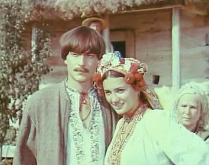

У цьому творі є дві дії: І дія (7 яв), ІІ дія (11 яв). Особливістю композиції є обрамлення кожної дії піснями.
Експозиція: знайомство з Наталкою та її родиною, виборним, возним. Наталка кохає Петра і чекає його.
Зав’язка: намір возного одружитися з Наталкою. Наталка давно кохає наймита Петра, який відправився на заробітках через відмову Наталчиного батька віддати за нього дочку. Дівчина відповідає: «Ви пан, а я сирота; ви багатий, а я бідна; ви возний, а я простого роду», натякаючи на їхню станову нерівність.
Розвиток дії: Наталка погоджується на шлюб з возним заради покращення матеріального становища сім’ї: її мати Терпилиха мріє про заможного зятя. Микола влаштовує побачення Наталки з Петром, який повернувся із заробітків.
Кульмінація: Наталка категорично відмовляється стати дружиною возного. Петро радить підкоритися матері й пропонує коханій усі зароблені ним гроші.
Розв’язка: Матір дає благословення Наталки і Петра на одруження. Розчулений таким актом самопожертви, возний зрікається Наталки на користь благородного парубка, бо розуміє, що Наталки йому не втримати.